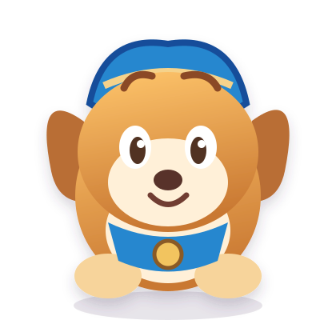

بودي — Bodi

IdleAnticipation
Takeoff
Airborne
Landing
Settle
مرجع للتوقيت والإحساس بالوزن، باستخدام الرسومات الحالية. دي مراجعة poses وليست Rig أو رسومات frame-by-frame.

Idle IdleAnticipationTakeoffAirborneLandingSettle
IdleAnticipationTakeoffAirborneLandingSettle IdleAnticipationTakeoffAirborneLandingSettle
IdleAnticipationTakeoffAirborneLandingSettle